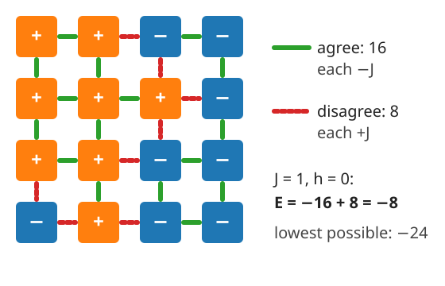
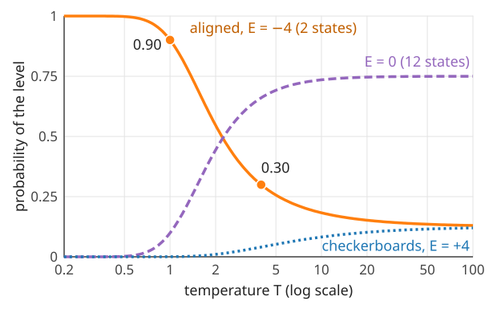
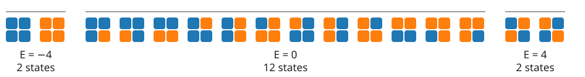
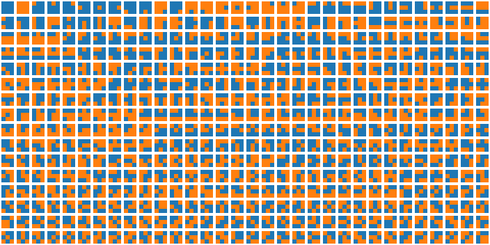
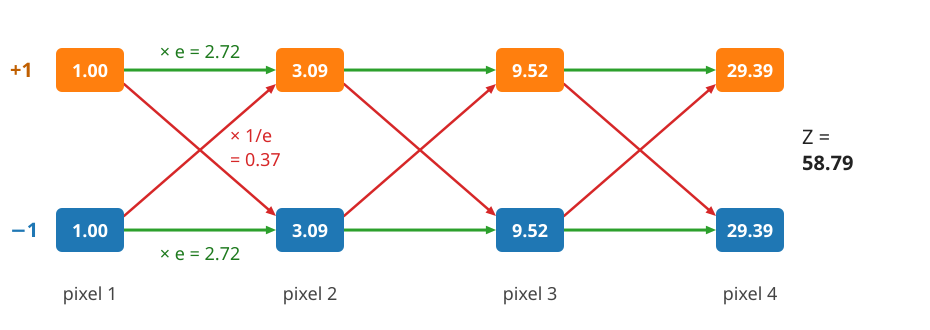
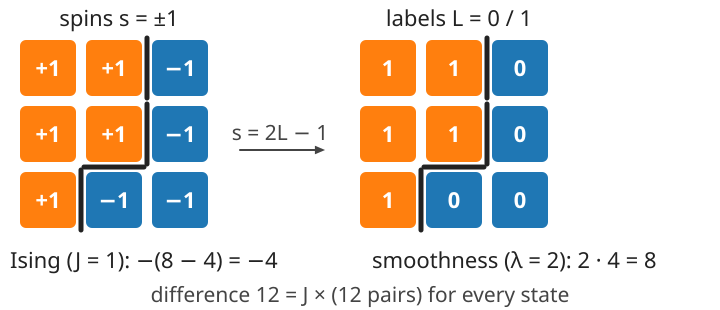

Energy and probability: the Ising model
About this lecture
“Neighbouring pixels usually agree” is a statement about probability. This unit turns it into a model: an energy that counts disagreements, and a rule that turns energy into probability.
- The Ising model: \pm 1 “spins” on a grid that want to agree with their neighbours.
- The Gibbs distribution: low energy = likely; temperature says how strongly.
- The partition function Z: easy for 16 states, hopeless for an image, easy again for a chain.
- The link back to graph cuts: the Ising energy is the segmentation energy.
Slides titled The math give the formulas and proofs; the ideas are complete without them.
Neighbouring pixels usually agree

- Each pixel of the noisy image was flipped with probability 0.2. Looked at alone, a pixel cannot be trusted.
- But true images are made of regions: a pixel usually has the same value as its neighbours. An isolated black pixel in a white area is unlikely to be real.
- Wanted: a number for “how plausible is this whole image”, high for images with few disagreeing neighbours.
The Ising model
Each pixel p carries a spin s_p = +1 or -1 (object / background, or “up” / “down”). Two numbers set the preferences:
- Coupling J > 0: every pair of 4-neighbours that agrees lowers the energy by J; every pair that disagrees raises it by J.
- Field h: every +1 lowers the energy by h (and every -1 raises it): a preference for one value.
E(\mathbf s) = -J \sum_{\text{neighbours } (p,q)} s_p s_q \;-\; h \sum_p s_p
The story it came from (Ising, 1925): a magnet. Each atom is a small arrow that wants to point like its neighbours; heat shakes them. Only the formulas matter here.
- J < 0 (an antiferromagnet) rewards disagreement: the best states are checkerboards. Not useful for images, but a good check of understanding.

From energy to probability
The Gibbs distribution (also called Boltzmann distribution) turns every energy into a probability:
p(\mathbf s) = \frac{e^{-E(\mathbf s)/T}}{Z}, \qquad Z = \sum_{\text{all states } \mathbf s} e^{-E(\mathbf s)/T}
- Low energy = high probability. The exponential makes a state with 4 units less energy e^{4/T} times more likely.
- Z (the partition function) only makes the probabilities sum to 1.
- Ratios need no Z: \dfrac{p(\mathbf a)}{p(\mathbf b)} = e^{-(E_a - E_b)/T}. Comparing two images only needs their energy difference. This sentence is the key to the next unit.
The math: why an exponential?
Two requirements fix the form p \propto e^{-E/T}:
- Only energy differences matter. Adding a constant c to every energy must not change the probabilities: e^{-(E + c)/T} = e^{-c/T}e^{-E/T}, and the factor e^{-c/T} cancels against Z.
- Independent parts multiply. Two separate lattices with E = E_1 + E_2 should be independent: p = p_1 p_2. Only the exponential turns sums into products: e^{-(E_1 + E_2)/T} = e^{-E_1/T}e^{-E_2/T}, and Z = Z_1 Z_2.
Equivalently, -T\log p(\mathbf s) = E(\mathbf s) + T\log Z: energy is negative log-probability, up to a constant. The literature often writes \beta = 1/T (and also \beta for J); we keep T and J, and later \lambda.
Temperature: how strongly energy matters
The temperature T (in energy units) is a knob:
- T \to 0: e^{-E/T} is overwhelmingly largest for the lowest energy. All probability goes to the ground states (the energy minima).
- T \to \infty: e^{-E/T} \to 1 for every state. All states are equally likely: the energy no longer matters.
- In between: low energies are preferred, higher ones still happen.
Energy minimisation is the T \to 0 limit of probability. “Find the lowest energy” (graph cuts) and “describe the likely states” (this day) are the same model, read at different temperatures.

The 2 \times 2 lattice by hand

J = 1, h = 0, free boundary: 4 neighbour pairs. Orange = +1, blue = -1.
- 2 aligned states: all 4 pairs agree, E = -4. 2 checkerboards: all disagree, E = +4. The other 12: two pairs agree, two disagree, E = 0.
- Z = 2e^{4/T} + 12 + 2e^{-4/T}. At T = 1: 109.20 + 12 + 0.04 = 121.23.
- p(\text{both aligned states}) = 109.20 / 121.23 = 0.90; each one 0.45. At T = 4: Z = 18.17 and only 0.30.
Try it: every state of a tiny lattice
The partition function is the hard part
Z sums over every state.
| lattice | states 2^n |
|---|---|
| 2 \times 2 | 16 |
| 3 \times 3 | 512 |
| 4 \times 4 | 65 536 |
| 256 \times 256 | 2^{65536} \approx 10^{19728} |

- For an image, Z cannot be computed, and so neither can the probability of one particular image.
- What still works without Z: ratios (next unit: sampling), and the lowest energy (graph cuts, unit 3).
A chain is easy: sum from left to right
For pixels on a line (or a ring) there is a shortcut, the same trick as dynamic programming on a chain (graph-cut day, segchain), with “minimum” replaced by “sum”:
- Walk along the chain. Keep two numbers: the total weight of all partial chains ending in +1, and of those ending in -1.
- Each new pixel updates both with a 2 \times 2 table of weights e^{-(\text{pair energy})/T}: the transfer matrix.
- n pixels cost n small steps instead of 2^n terms.

In 2D, the rows interact with each other in every column; no such shortcut exists in general.
The math: the transfer matrix
A ring of n spins, energy E = -J\sum_i s_i s_{i+1} - h\sum_i s_i (with s_{n+1} = s_1). Split the field evenly over the two pairs of each spin:
e^{-E/T} = \prod_{i=1}^n M_{s_i s_{i+1}}, \qquad M = \begin{bmatrix} e^{(J+h)/T} & e^{-J/T} \\ e^{-J/T} & e^{(J-h)/T}\end{bmatrix} \quad (\text{rows/columns: } +1, -1).
Summing over all states is a chain of matrix products around the ring:
Z = \sum_{s_1, \dots, s_n} M_{s_1 s_2}M_{s_2 s_3}\cdots M_{s_n s_1} = \operatorname{tr}(M^n) = \mu_1^n + \mu_2^n,
with the eigenvalues \mu_{1,2} = e^{J/T}\cosh(h/T) \pm \sqrt{e^{2J/T}\sinh^2(h/T) + e^{-2J/T}}. For h = 0: 2\cosh(J/T) and 2\sinh(J/T).
Ring of 3, J = 1, h = 0, T = 1: 3.086^3 + 2.350^3 = 42.38. Check by listing: 2 aligned states (E = -3) and 6 others (E = +1): 2e^3 + 6e^{-1} = 42.38.
Recall: this is the segmentation energy
The graph-cut day (seg-energy/) wrote a binary segmentation as labels L_p \in \{0, 1\} with
E(L) = \sum_p D_p(L_p) + \lambda\sum_{(p,q)}[L_p \ne L_q].
With s_p = 2L_p - 1 it is the Ising energy, up to a constant:
- the coupling is the smoothness weight: \lambda = 2J;
- the field is a data term: D_p(1) - D_p(0) = -2h_p (a pixel-dependent field h_p when the data differ from pixel to pixel).
So the minimum-cut solution of that day is the Ising ground state, and its \lambda is today’s J. From unit 3 on we write \lambda.

The math: from spins to labels
With s_p = 2L_p - 1: if L_p = L_q then s_p s_q = 1, otherwise -1, so s_p s_q = 1 - 2[L_p \ne L_q] and
-J s_p s_q = 2J\,[L_p \ne L_q] - J, \qquad -h_p s_p = -2h_p L_p + h_p.
Summing, with m neighbour pairs:
E_{\text{Ising}}(\mathbf s) = \underbrace{\sum_p (-2h_p) L_p}_{D_p(1) = -2h_p,\; D_p(0) = 0} + \;2J\sum_{(p,q)}[L_p \ne L_q] \;+\; \Big(\sum_p h_p - mJ\Big).
The constant does not depend on the state: same probabilities, same minimum. The graph-cut day’s “probabilistic view” slide read the same equation the other way: P(L \mid I) \propto e^{-E(L)}, i.e. T = 1.
Summary
- The Ising model: spins \pm 1 on a grid; the coupling J rewards agreeing neighbours, the field h prefers one value.
- The Gibbs distribution p(\mathbf s) \propto e^{-E(\mathbf s)/T}: low energy is likely; ratios of probabilities need only energy differences.
- Temperature: T \to 0 keeps only the lowest energies (energy minimisation), T \to \infty makes everything equally likely.
- The partition function Z is easy for tiny lattices and for chains (transfer matrix), impossible for images.
- The Ising energy is the binary segmentation energy, with \lambda = 2J and the field as data term.